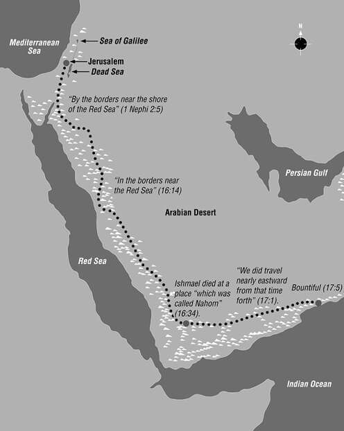

Why do some actions bring divine approval but also intense opposition? (2:1) On the one hand God says Lehi is blessed “because of the things which [he] has done,” but on the other, “because [he] has been faithful,” residents of Jerusalem “seek to take away [his] life.” Can you think of an act (or choice) that led to your being blessed by the Lord but persecuted by others?
Why did Lehi have so many significant dreams? (2:2) “It is certain that divine messages have often been communicated to man by means of dreams” (Reynolds and Sjodahl, Commentary on the Book of Mormon, 1:24). Though it is not apparent in this case whether Lehi received two dreams or one, it is obvious that the Lord not only teaches and inspires but also gives commands “even in a dream.”
Monte S. Nyman wrote: “Dreams have been used frequently by the Lord to give instruction and warning. The Book of Mormon uses dreams and visions interchangeably. Lehi later says ‘I have dreamed a dream; or in other words, I have seen a vision’ (1 Nephi 8:2). Joseph Smith changed the word ‘dream’ to ‘vision’ in several places in his translation of the Bible (i.e. Matthew 2:19, 22). ‘The angel of the Lord appeared to Joseph [the husband of Mary] saying. Arise and take the young child and his mother and flee to Egypt.’ ‘An angel of the Lord appeared in a vision to Joseph in Egypt’ and told him to return to the land of Israel after ‘Herod was dead’ (JST, Matthew 3:13, 19). Lehi’s dream is only one of several dreams mentioned in 1 Nephi (see 1:16; 3:1; 8:2). Apparently dreams were a frequent source of revelation.
“The Lord commanding Lehi to take his family and depart (v. 2) seems to refer to the same dream cited in verse one. As mentioned in chapter one, Lehi’s residence appears to have been outside the city of Jerusalem but still encompassed in the larger area called Jerusalem. The wilderness that Lehi departed into was waste or desert land, not jungle or forest. Lehi was not told the extent of his journey, or the trials he would encounter. He was simply sent. How similar this is to each individual’s sojourn through the ‘wilderness’ of this earth. Upon arrival, none of us know the length of time of our sojourn nor do we know the trials that we will encounter. We must all proceed with faith” (Book of Mormon Commentary, 1:47).
What does Lehi’s choice of provisions reveal about his perspective? (2:4) Of all that Lehi could choose from to take into the wilderness—gold, silver, and other precious things—the prophet took only his family and provisions for them to subsist. President Gordon B. Hinckley declared: “The family is divine. It was instituted by our Heavenly Father. It encompasses the most sacred of all relationships. Only through its organization can the purposes of the Lord be fulfilled” (Teachings of Gordon B. Hinckley, 206). Both Lehi’s focus on his family and his swift obedience demonstrate his trust in the Lord.
Additionally, the value of the family is emphasized in “The Family: A Proclamation to the World,” which testifies that “the family is central to the Creator’s plan for the eternal destiny of His children.” Moreover, “the family is ordained of God” and “the disintegration of the family will bring upon individuals, communities, and nations the calamities foretold by ancient and modern prophets.”
How long and how far did Lehi’s colony travel? (2:5) “The nearest point of the Red Sea to Jerusalem is over two hundred miles. It is not stated how many days the family spent getting to the Red Sea, but it must have been around two weeks plus the three days. Although they would be hurrying, they would also have been careful not to attract attention” (Nyman, I, Nephi, Wrote This Record, 48).
A Possible Route of Lehi’s Journey
© Intellectual Reserve, Inc. Used by permission.
Why does Lehi say “a river of water”? (2:6) The phrase “river of water,” which sounds odd to speakers of English, provides remarkable evidence that the Prophet Joseph Smith actually translated this ancient text as he stated. “Although the term ‘river of water’ probably seemed foreign to Joseph Smith . . . , the use of the term in the Book of Mormon is consistent with both modern and ancient Hebrew and with other Semitic languages of the Middle East. Different words are used in these languages to differentiate between (1) a riverbed that has water flowing in it and (2) a dry riverbed. This is one of many examples that prove the Book of Mormon is translation literature” (Ludlow, Companion to Your Study of the Book of Mormon, 92–93).
Why did Lehi build an altar and make an offering? (2:7) Lehi lived the law of Moses. “According to the Mosaic law, an altar was to be built either of earth or stones not ‘polluted’ by any tools (Ex. 20:24, 25)” (Reynolds and Sjodahl, Commentary on the Book of Mormon, 1:26).
“The phrase ‘altar of stones’ derives from Mosaic Law (see Ex. 20:24–25; Deut. 27:5–7). On the character of Lehi’s altar . . . that in accord with the law of Moses, it must have been of unhewn field stones” (Brown, What Were Those Sacrifices Offered by Lehi?”, 8).
“Why, one may ask, did Lehi offer this other kind of sacrifice? In response we note that according to Leviticus 1 a burnt offering was made for atonement—and more specifically, purging—after one had committed sin. . . . In the case of Lehi’s burnt offerings, sin stood close by. In a couple of instances, of course, one might question whether family members had really committed sin. But one must remember that Lehi was proceeding as if he were a priest offering sacrifices at the temple just in case” (Brown, “What Were Those Sacrifices Offered by Lehi?”, 2).
Why did Lehi name a river and a valley after his oldest sons? (2:9–10) At first glance some might think Lehi was leaving his mark on the region by naming a river after Laman and a valley after Lemuel. However, Lehi was more interested in inspiring his sons than in leaving family place names. He hoped these comparisons would lead his sons to more obedience to God’s commandments and more interest in the Lord God, “the foundation of all righteousness.” Unfortunately, “such parallels, like parables, fall too often upon deaf ears and do not find place in the hearts of the hardened (cf. Matthew 13:13). So it was with Laman and Lemuel” (McConkie and Millet, Doctrinal Commentary, 1:32).
Lehi’s description of the river and valley are characteristic of ancient Arab poetry. “Here, Lehi: (1) sees that the river running through the valley empties into the sea, (2) addresses two of his sons traveling with him, (3) makes the majesty of the scene an object lesson for them, (4) urges them to be like the river and valley, (5) appears to give the poetic advice on the spot, (6) each verse is concise and can stand as complete on its own, and (7) pairs together two perfectly balanced couplets, directed at brothers, no less. Thus, Lehi’s poetry shares all seven features with Arabic poetry noted by Nibley” (Book of Mormon Central, “Did Lehi Use the Poetry of the Ancient Bedouin?”).
What is wrong with murmuring? (2:12) Murmuring reveals that the murmurer has a lack of faith or is shortsighted in his understanding of God’s plan for his children. Not only did Laman and Lemuel fail to “[know] the dealings of that God who had created them,” they knew not God. Elder Neal A. Maxwell taught: “Those of deep faith do not murmur . . . even while in deep difficulties. . . . Murmuring . . . drowns out the various spiritual signals to us” (Neal A. Maxwell Quote Book, 219).
Why did Laman and Lemuel believe Jerusalem could not be destroyed? (2:13) David Seely and Fred Woods stated: “The biblical record contains much information that helps us to better understand the attitude of Laman and Lemuel and many of their fellow inhabitants of Jerusalem and to identify the basis for their fervent belief that their city Jerusalem was invincible and impregnable.” Their study examines six factors that led to this mistaken idea: (1) the traditions of “That Great City”; (2) misunderstanding of covenant promises; (3) precedent of miraculous preservation during the Assyrian invasion; (4) strong defensive fortifications; (5) the Josiah reformation, which gave them a false sense of security; and (6) false prophets who had misled many (“How Could Jerusalem, ‘That Great City,’ Be Destroyed?” 595–96).
David Rolph Seely and Fred E. Woods continued: “The biblical record contains much information that helps us to better understand the attitude of Laman and Lemuel and many of their fellow inhabitants of Jerusalem and to identify the basis for their fervent belief that their city Jerusalem was invincible and impregnable.
“At least six interrelated factors, which will be discussed in this article, contributed to the Judahite belief that Jerusalem could not be destroyed: (1) The historical traditions of the spiritual heritage of Jerusalem, ‘that great city,’ suggested to many that the Lord would naturally preserve this holy place from destruction and desecration by the enemies of the covenant people. (2) The Jews misunderstood some of the Lord’s promises in connection with the covenants that he had made with them. In particular, they misunderstood the promises made to David in the Davidic covenant. (3) The miraculous preservation of Jerusalem and its inhabitants when the Assyrians besieged Jerusalem (2 Kgs. 18–19) in the days of King Hezekiah (701 b.c.) further reinforced the belief that the Lord would preserve his temple and holy city from the enemy. (4) The city of Jerusalem was fortified and prepared for siege. Hezekiah had heavily fortified the city against the Assyrian siege in 701 b.c. with massive walls and towers (2 Chr. 32:2–8) and had even prepared a water source inside the city for the inhabitants of the city to endure a long siege (2 Kgs. 20:20, 22 Chr. 32:4, 30). Thus the inhabitants of Jerusalem believed they could endure a long siege brought about by their seemingly impregnable walls. (5) The recent reforms of Josiah (640–609 b.c.), who had cleansed the temple and led his people in a ceremony of covenant renewal (2 Kgs. 22–23), had given certain people of Judah an undue sense of self and community righteousness that they believed would surely preserve them from any threatened destruction. (6) Assurances were given by false prophets, who promised Jerusalem and its inhabitants peace, safety, and preservation from the enemy instead of the destruction and exile prophesied by Jeremiah and Lehi. These false assurances were readily accepted by many since they were the words that they wanted to hear” (“How Could Jerusalem, ‘That Great City,’ Be Destroyed?” 595–96).
Who are the “Jews” referred to in verse 13? (2:13) “The term ‘Jew’ is used in the Book of Mormon with two possible meanings: (1) a descendant of Judah, the son of Jacob (or, perhaps in a more general vein, a member of the house of Israel), and (2) a citizen of the kingdom of Judah of this particular period” (Ludlow, Companion to Your Study of the Book of Mormon, 95).
Why would Nephi feel it important to say that his father dwelt in a tent in the wilderness? (2:15) “With the announcement that his ‘father dwelt in a tent,’ Nephi serves notice that he had assumed the desert way of life, as perforce he must for his journey. Any easterner would appreciate the significance and importance of the statement, which to us seems almost trivial. If Nephi seems to think of his father’s tent as the hub of everything, he is simply expressing the view of any normal Bedouin, to whom the tent of the sheikh is the sheet anchor of existence” (Nibley, Lehi in the Desert, 58).
“To an Arab, ‘My father dwelt in a tent’ says everything. ‘The present inhabitants of Palestine,’ writes Canaan, ‘like their forefathers, are of two classes: dwellers in villages and cities, and the Bedouin. As the life and habits of the one class differ from the those of the other, so do their houses differ. Houses in villages are built of durable material; . . . on the other hand, Bedouin dwellings, tents, are more fitted for nomadic life.’ An ancient Arab poet boasts that his people are ‘the proud, the chivalrous people of the horse and camel, the dwellers-in-tents, and no miserable ox-drivers.’ A Persian king but fifty years after the fall of Jerusalem boasts that all the civilized kings ‘as well as the Bedouin tent-dwellers brought their costly gifts and kissed my feet,’ thus making the same distinction as the later poet. One of the commonest oaths of the Arabs, Burckhardt reports, is ‘by the life of this tent and its owners,’ taken with one hand resting on the middle tent pole. If a man’s estate is to be declared void after his death, ‘the tent posts are torn up immediately after the man has expired, and the tent is demolished,’ while on the other hand ‘the erection of a new tent in the desert is an important event celebrated with feast and sacrifice.’ And the cult of the tent was as important to the Hebrews as well. Indeed, the Hebrew word for tent (ohel) and the Arabic word for family (ahl), were originally one and the same word. ‘The Bedouin has a strong affection for his tent,’ says Canaan. ‘He will not exchange it with any stone house.’ So Jacob was ‘a plain man, dwelling in tents’ (Genesis 25:27), though, let us add, by no means in squalor: ‘Casual travelers in the Orient, who have seen only the filthy, wretched tents of the tribeless gypsy Bedouins . . . would be surprised, perhaps, at the spaciousness and simple luxury in the tent of a great desert sheik.’
“So with the announcement that his ‘father dwelt in a tent,’ Nephi serves notice that he had assumed the desert way of life, as perforce he must for his journey. Any easterner would appreciate the significance and importance of the statement, which to us seems almost trivial. If Nephi seems to think of his father’s tent as the hub of everything, he is simply expressing the view of any normal Bedouin, to whom the tent of the sheikh is the sheet anchor of existence. ‘A white flag,’ we are told, ‘is sometimes hoisted above his tent to guide strangers and visitors. All visitors are led directly to the tent of the [sheikh].’ When Nephi urged the frightened Zoram to join the party in the desert, he said: ‘If thou wilt go down into the wilderness to my father thou shalt have place with us’ (1 Nephi 4:34). The correctness of the proposal is attested not only by the proper role of Lehi in receiving members and guests into the tribe but also in the highly characteristic expression, ‘thou shalt have place with us.’ For since time immemorial the proper word of welcome to the stranger who enters one’s tent has been ahlan wa sahlan wa marhaban, literally (perhaps), ‘a family, a smooth place, and a wide place!’ Equivalent expressions are found in the Old Testament, as when Abraham invites his heavenly visitor to sit beneath his tree (Genesis 18:4), and here too such details are authentic touches of Bedouin life. But none of the Bible expressions are as typically ‘Arabic’ as Nephi’s invitation” (Nibley, Lehi in the Desert, 57–59).
What did Nephi do that invited the Lord to visit him? (2:16) “A number of the rare visits made by the Lord to persons upon earth have been to young men—perhaps we had better say to boys. . . . Nephi found the Lord while he was yet a boy, even as Joseph Smith, the boy prophet of this age, found him. These facts should make a lasting impression upon the young people of our time. Through faith, prayer, good works, and patient persistence, men may even now enjoy the personal blessings of the Lord. But few are willing to pay the price which is necessary” (Sperry, Book of Mormon Compendium, 99).
“Whether the Lord visited Nephi in person or touched his heart by the power of his Spirit (see Alma 17:10) is not known. The result, however, was the same—Nephi’s heart was softened, and he gained a personal witness, born of the Holy Ghost, that the testimony of his father was genuine and true” (McConkie and Millet, Doctrinal Commentary, 1:34).
What was the difference between Nephi and Laman and Lemuel? (2:17–18) In Nephi’s impressive contrast set throughout 1 Nephi 2, we clearly see what led Laman and Lemuel to rebellion and Nephi to obedience. It was a matter of the heart. Verses 16–18 give a key to understanding some of the differences between Nephi and his older brothers: “Nephi sought the Lord early and earnestly and found him; Laman and Lemuel would not so much as begin the spiritual odyssey (see 1 Nephi 15:8–9). Nephi could view things (good and bad, blessings and trials) from an elevated perspective; Laman and Lemuel continued to refuse the vantage of higher ground” (McConkie and Millet, Doctrinal Commentary, 1:34).
How can I enjoy blessings similar to Nephi’s? (2:19) Nephi was humble and obedient and had faith in the Lord, but because he “sought [the Lord] diligently” he was promised he would prosper and obtain “a land of promise.” In what ways can you seek the Lord more diligently?
What additional prophecies did the Lord make concerning the promised land in the New World? (2:20) “Our Father in Heaven planned the coming forth of the Founding Fathers and their form of government as the necessary great prologue leading to the restoration of the gospel. Recall what our Savior Jesus Christ said nearly two thousand years ago when he visited this promised land: “For it is wisdom in the Father that they should be established in this land, and be set up as a free people by the power of the Father, that these things might come forth” (3 Nephi 21:4). America, the land of liberty, was to be the Lord’s latter-day base of operations for His restored church” (Ezra Taft Benson, “Our Divine Constitution,” 4).
President Ezra Taft Benson wrote: “When this nation was established, the Church was restored and from here the message of the restored gospel has gone forth—all according to divine plan. This then becomes the Lord’s base of operations in these latter days. And this base—the land of America—will not be shifted out of its place. This nation will, in a measure at least, fulfill its mission even though it may face serious and troublesome days. The degree to which it achieves its full mission depends upon the righteousness of its people. God, through His power, has established a free people in this land as a means of helping to carry forward His purposes.
“It was His latter-day purpose to bring forth His gospel in America, not in any other place. It was in America where the Book of Mormon plates were deposited. That was no accident. It was His design. It was in this same America where they were brought to light by angelic ministry (see Book of Mormon Introduction). It was here where He organized His modern Church, where He, Himself, made a modern personal appearance (see D&C 20:1; Joseph Smith–History 1:17).
“It was here under a free government and a strong nation that protection was provided for His restored Church. Now God will not permit America, His base of operations, to be destroyed. He has promised protection to this land if we will but serve the God of the land (see Ether 2:12). He has also promised protection to the righteous even, if necessary, to send fire from heaven to destroy their enemies (1 Nephi 22:17)” (Teachings of Ezra Taft Benson, 571).
Why did the Lord make Nephi a ruler over his older brothers? (2:21–22) Just as Reuben and Esau each lost the birthright to a younger brother (see 1 Chronicles 5:1–2; Hebrews 12:16–17), so Laman lost his right to be “a ruler and [a] teacher over [his] brethren” because of his rebellion against God (see 1 Nephi 3:29).
“Here was a promise that was to be revolutionary in its effects. It was to mean a reversal of the ancient law of primogeniture, to which the Hebrews clung so tenaciously. This law of tradition was the custom of the firstborn son inheriting the lion’s share of his father’s goods plus the father’s position of family or tribal leadership. Laman’s children and children’s children never forgave Nephi, who was Laman’s younger brother, for upsetting this ancient order of succession. Because they were not taught by their fathers that God had ordained the change and hence inherited a distorted version of the matter, they looked upon the group that was loyal to Nephi, when that group finally withdrew from Lamanite fellowship altogether, as a separationist party that properly belonged under Lamanite rulership. For many generations this false concept of the schism provided the main pretext the Lamanites had for trying to subjugate the Nephites. They claimed that they were only trying to restore the Nephite secessionists to Lamanite rulership under which they belonged” (Ricks, Book of Mormon Commentary, 51).
